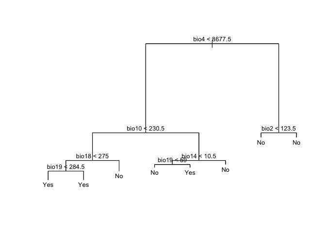
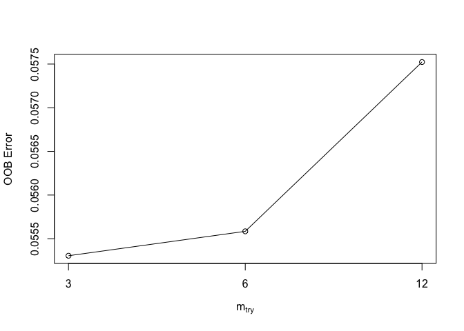
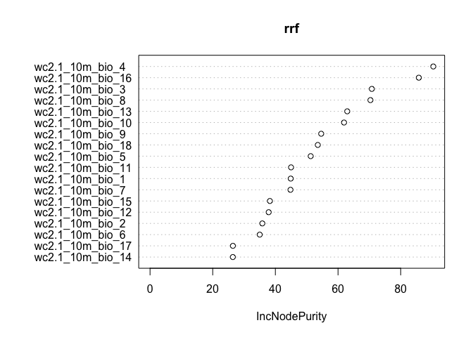
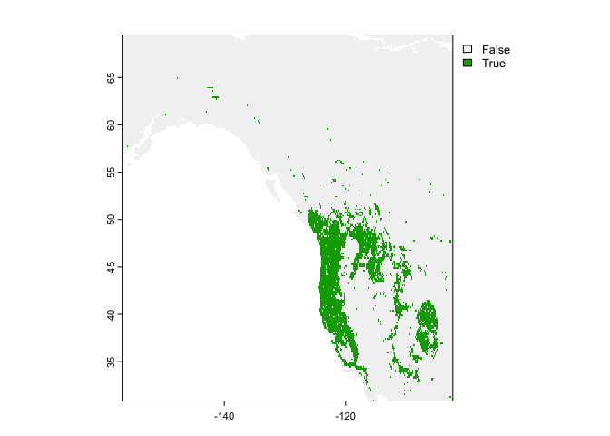

Regression Trees
GEO 200CN - Quantitative Geography
Professor Noli Brazil
Spring 2020
This lab guide goes through the use of regression trees to make spatial predictions. It follows closely the material presented in ISLR Ch. 8. The objectives of this lab guide are as follows
- Learn how to run classification trees
- Learn how to prune classification trees
- Learn how to run regression and classification random forest models
- Learn how to make predictions using a random forest model
To achieve these objectives, you will be applying regression tree methods in species distribution modelling or ecological niche modeling. The objective in species distribution modelling is to predict the entire range of a species based on a set of locations where it has been observed. In this lab guide, we use the hominid species Imaginus magnapedum (also known under the vernacular names of “bigfoot” and “sasquatch”). This species is so hard to find (at least by scientists) that its very existence is commonly denied by the mainstream media! For more information about this controversy, see the article by Lozier, Aniello and Hickerson: Predicting the distribution of Sasquatch in western North America: anything goes with ecological niche modelling. Note that much of this lab guide has been adapted from rspatial.org.
Installing and loading packages
We’ll be using two new packages in this lab guide. First, install them
if (!require("tree")) install.packages("tree")
if (!require("randomForest")) install.packages("randomForest")Second, load these packages and the others we will need for executing the commands in this lab guide.
library(sp)
library(maptools)
library(raster)
library(dismo)
library(tree)
library(randomForest)Bringing in the data
The research objectives are to find out
- What the complete range of the bigfoot species might be.
- How good (general) our model is by predicting the range of the Eastern bigfoot sub-species, with data from the Western sub-species.
- Predict where in Mexico the creature is likely to occur.
First bring in the bigfoot location data. Download the file bigfoot.csv from Canvas in the Labs and Assignments Week 10 folder.
bf <- read.csv("bigfoot.csv")
dim(bf)## [1] 3092 3head(bf)## lon lat Class
## 1 -142.9000 61.50000 A
## 2 -132.7982 55.18720 A
## 3 -132.8202 55.20350 A
## 4 -141.5667 62.93750 A
## 5 -149.7853 61.05950 A
## 6 -141.3165 62.77335 AThese data show the latitude and longitude information of the known locations of bigfoot sightings. Let’s plot where these fellas like to roam.
plot(bf[,1:2], cex=0.5, col='red')
## Checking rgeos availability: TRUE
data(wrld_simpl)
plot(wrld_simpl, add=TRUE)
We want to predict bigfoot locations, so we need predictors. The main predictors typically used in species distribution modeling are climate data. Specifically, we use ‘bioclimatic variables’. A record layout of the variables can be found here. Bring these data in, which are conveniently stored in the package raster.
wc <- raster::getData('worldclim', res=10, var='bio')What does these data look like? Plot the variables bio1 (Annual Mean Temperature) and bio12 (Annual Precipitation) for the world.
plot(wc[[c(1, 12)]], nr=2)Now extract climate data for the locations of our observations. That is, get data about the climate where the species have been spotted.
bfc <- extract(wc, bf[,1:2])
head(bfc)## bio1 bio2 bio3 bio4 bio5 bio6 bio7 bio8 bio9 bio10 bio11 bio12 bio13
## [1,] -14 102 27 9672 174 -197 371 51 -11 108 -137 973 119
## [2,] 62 55 31 4136 157 -17 174 43 98 118 15 2602 385
## [3,] 62 55 31 4136 157 -17 174 43 98 118 15 2602 385
## [4,] -57 125 23 15138 206 -332 538 127 -129 127 -256 282 67
## [5,] 10 80 25 8308 174 -140 314 66 5 119 -91 532 81
## [6,] -59 128 23 14923 204 -334 538 122 -130 122 -255 322 75
## bio14 bio15 bio16 bio17 bio18 bio19
## [1,] 43 30 332 156 290 210
## [2,] 128 33 953 407 556 721
## [3,] 128 33 953 407 556 721
## [4,] 6 81 163 22 163 27
## [5,] 22 41 215 72 159 117
## [6,] 8 79 183 28 183 32The dataset bf gives us data for bigfoot sightings. The dataset bfc gives us the climate data for the locations of these sightings. But, in order to build a prediction model, we also need the locations and their climate data for where bigfoot was not observed. But we do not have data from a systematic survey that determined both presence and absence. We have presence-only data.
The common trick to deal with this is to not model presence versus absence, but presence versus a ‘random expectation’. This random expectation (also referred to as ‘background’, or ‘random-absence’ data) is what you would get if the species had no preference for any of the predictor variables.
Our study region is North America. So, you create a set of random climate observations from within the area of North America where bigfoot observations have been made.
#measures extent of area for bigfoot observations
e <- extent(SpatialPoints(bf[, 1:2]))
e## class : Extent
## xmin : -156.75
## xmax : -64.4627
## ymin : 25.141
## ymax : 69.5set.seed(0)
#takes a 5000 random samples from wc within the extent e for bigfoot observations
bg <- sampleRandom(wc, 5000, ext=e)
dim(bg)## [1] 5000 19head(bg)## bio1 bio2 bio3 bio4 bio5 bio6 bio7 bio8 bio9 bio10 bio11 bio12 bio13
## [1,] 100 111 29 9586 290 -91 381 199 -30 219 -30 963 100
## [2,] -100 81 16 14284 148 -330 478 73 -271 83 -273 254 44
## [3,] 120 117 30 9465 311 -73 384 218 -8 237 -8 1047 112
## [4,] 145 134 38 7783 315 -30 345 57 201 242 40 1403 155
## [5,] 26 89 32 6545 186 -91 277 -47 111 113 -52 1531 257
## [6,] 128 133 41 7000 285 -37 322 49 134 215 35 1841 186
## bio14 bio15 bio16 bio17 bio18 bio19
## [1,] 51 20 294 180 287 180
## [2,] 11 50 113 35 97 37
## [3,] 59 19 318 201 294 201
## [4,] 86 16 403 287 318 386
## [5,] 29 61 731 131 136 676
## [6,] 139 8 489 429 460 466Now you combine the random locations where bigfoot has not been “observed” (bg) with the bigfoot observation data (bfc) into a single data frame.
#bfc is the bigfoot climate data and bg is the nonbigfoot climate data. We also create an indicator pa of whether bigfoot was seen in this location (pa =1) or not (pa=0)
d <- rbind(cbind(pa=1, bfc), cbind(pa=0, bg))
d <- data.frame(d)
dim(d)## [1] 8092 20Now we have the data to fit a model. But let’s split the data into East and West. In this case, we may believe Western and Eastern bigfoots are actually different, albeit related, sub-species (for example, the Eastern Sasquatch is darker and less hairy). We are going to fit the model using Western data and then see if it predicts well for the Eastern data.
#eastern north america
de <- d[bf[,1] > -102, ]
de <- na.omit(de) #kicks out the two empty cells in eastern data set
#western north america
dw <- d[bf[,1] <= -102, ]Now, we are ready. Let’s run some regression trees!!
Classification trees
Our response variable is whether bigfoot is located in a particular location (Yes) or not (No). We can use a classification method to predict this binary variable. Here, we use a Classification Tree (CART), which is discussed on page 311 in ISLR. We’ll need to convert the (0,1) numeric indicator pa into a new (No, Yes) factor variable we’ll name fpa.
dw$fpa <- as.factor(ifelse(dw$pa == 1, "Yes", "No"))Use the tree() function in the tree package to run a CART. The syntax of the function is similar to lm() and other linear regression modelling functions we’ve used extensively in this class. Note that we take out the (0,1) indicator from the dataset using the function select() when we run the model.
cart1 <- tree(fpa~., data=dplyr::select(dw,-pa))Here is a summary of the results.
summary(cart1)##
## Classification tree:
## tree(formula = fpa ~ ., data = dplyr::select(dw, -pa))
## Variables actually used in tree construction:
## [1] "bio4" "bio10" "bio18" "bio19" "bio14" "bio2"
## Number of terminal nodes: 8
## Residual mean deviance: 0.5177 = 1676 / 3238
## Misclassification error rate: 0.1035 = 336 / 3246We see that the training error rate is 10.35%. And here is the decision tree diagram, like the one shown in Figure 8.4 in ISLR.
plot(cart1, main="Classification Tree")
# text(cart, use.n=TRUE, all=TRUE, cex=.8)
text(cart1, cex=.8, digits=1)
Question 1: Which variable is the most important indicator of where our species might be located?
Question 2: Describe the conditions under which you are likely to find our species?
Tree Pruning
Next, we consider whether pruning the tree might lead to improved results. Pruning is described in ISLR starting on page 307. The algorithm is located on page 309. The key step is step 3, which describes using k-fold cross validation to find the best tuning parameter alpha, which dictates the number of terminal nodes of the best fit tree. The function cv.tree() performs cross-validation in order to determine the optimal level of tree complexity. Plug in the big tree cart1 produced by tree() in the section above followed by FUN = prune.misclass, which indicates that we want the classification error rate to guide the cross-validation and pruning process.
#kfold cuts the fold in random so set a set.
set.seed(123)
cv.cart <- cv.tree(cart1, FUN = prune.misclass)Let’s see what we get
names(cv.cart)## [1] "size" "dev" "k" "method"and their values
cv.cart## $size
## [1] 8 6 4 3 2 1
##
## $dev
## [1] 359 359 369 413 644 1224
##
## $k
## [1] -Inf 0 4 64 234 582
##
## $method
## [1] "misclass"
##
## attr(,"class")
## [1] "prune" "tree.sequence"Note that, despite the name, dev corresponds to the cross-validation error rate in this instance. The results under size give the number of terminal nodes (size of the tree). The tree with eight and six terminal nodes (see size) results in the lowest cross-validation error rate, with 359 cross-validation errors (see dev). We plot the error rate as a function of the size.
plot(cv.cart$size, cv.cart$dev, type = "b")Let’s be parsimonious and choose 6 as the best fit tree. We then apply the prune.misclass() function in order to prune the tree to obtain the six-node tree.
prune.cart <- prune.misclass(cart1, best = 6)And now the decision tree diagram
plot(prune.cart, main="Regression Tree")
# text(cart, use.n=TRUE, all=TRUE, cex=.8)
text(prune.cart, cex=.8, digits=1)
Differ much from the tree we got from cart1?
Random Forest
CART gives us a nice result to look at that can be easily interpreted. But the approach suffers from high variance (meaning that the model will be over-fit, it is different each time a somewhat different datasets are used). Random Forest does not have that problem as much. The method, which is an extension of Bagging, is discussed starting on page 319 in ISLR.
Classification
We fit the Random Forest model using the function randomForest() from the package randomForest.
#use the western data in all the predictor columns with the climate except "pa" which is the response variable
crf <- randomForest(fpa~., data=dplyr::select(dw,-pa))
crf##
## Call:
## randomForest(formula = fpa ~ ., data = dplyr::select(dw, -pa))
## Type of random forest: classification
## Number of trees: 500
## No. of variables tried at each split: 4
##
## OOB estimate of error rate: 8.53%
## Confusion matrix:
## No Yes class.error
## No 1881 141 0.06973294
## Yes 136 1088 0.11111111The variable importance plot shows which variables are most important in fitting the model. Variable importance is described in ISLR on page 319. The plot is generated by randomizing each predictor variable one by one and then computing the decline in model prediction.
varImpPlot(crf)Regression
In the above sections, we’ve modelled bigfoot locations from a classification perspective. But, we can also use regression. In this case, by using a (0,1) numeric variable as the response, we are modelling the probability that bigfoot is located in a location. We still use the randomForest() function to run a Random Forest regression model.
Note that there is an important parameter that differentiates Random Forests from regular bagging (page 319 in ISLR talks about this parameter). In the randomForest() function, this parameter is designated by the argument mtry =. We did not specify mtry = above, and thus took whatever the default is.
Instead of the default, we can instead find the best value for this parameter by using the function tuneRF().
trf <- tuneRF(dplyr::select(dw,-c(pa,fpa)), dw[, 'pa'])## mtry = 6 OOB error = 0.06565627
## Searching left ...
## mtry = 3 OOB error = 0.06557058
## 0.001305069 0.05
## Searching right ...
## mtry = 12 OOB error = 0.06721088
## -0.02367799 0.05We then find the best value
trf## mtry OOBError
## 3 3 0.06557058
## 6 6 0.06565627
## 12 12 0.06721088mt <- trf[which.min(trf[,2]), 1]
mt## [1] 3We can then plug this value into the randomForest() function in the argument mtry =
rrf <- randomForest(dw[, 2:ncol(d)], dw[, 'pa'], mtry=mt)
rrf##
## Call:
## randomForest(x = dw[, 2:ncol(d)], y = dw[, "pa"], mtry = mt)
## Type of random forest: regression
## Number of trees: 500
## No. of variables tried at each split: 3
##
## Mean of squared residuals: 0.06360254
## % Var explained: 72.92Question 3: What did tuneRF help us find? What does the value of mt represent?
Here we show the variable importance plot for the model.
varImpPlot(rrf)
Predict
We can use the random forest models we constructed above to make predictions to any other place for which we have values for the predictor variables. Our climate data is global so we could find suitable places for bigfoot anywhere. But before we start placing sasquatch anywhere we please, let’s first predict their locations in the western portion of North America.
We are going to construct a continuous raster surface predicting the presence of sasquatch in western North America. We need to specify the spatial extent of western North America using the following code.
ew <- extent(SpatialPoints(bf[bf[,1] <= -102, 1:2]))Regression
Let’s interpolate the probability that bigfoot will be present in a location using the regression random forest model rrf
rp <- predict(wc, rrf, ext=ew)Show a raster map of the predicted range for the probability of our species presence across the study area.
plot(rp)
Note that the regression predictions are well-behaved, in the sense that they are between 0 and 1. However, they are continuous within that range, and if you wanted presence/absence, you would need a threshold (i.e. if it is above the threshold, bigfoot is present, otherwise absent). To get the optimal threshold, you would normally have a hold out data set (see ISLR 8.3 for examples of using test and training data), but here we used the training data for simplicity.
eva <- evaluate(dw[dw$pa==1, ], dw[dw$pa==0, ], rrf)
eva## class : ModelEvaluation
## n presences : 1224
## n absences : 2022
## AUC : 0.9996099
## cor : 0.9679664
## max TPR+TNR at : 0.4876013Find a good threshold to determine presence/absence. Anything in green is classifying that cell as bigfoot territory. Otherwise, not.
#uses the evaluation to find an optimal threshold
tr <- threshold(eva)
tr## kappa spec_sens no_omission prevalence equal_sens_spec
## thresholds 0.4876013 0.4876013 0.4506381 0.3749117 0.5226831
## sensitivity
## thresholds 0.7531567#choosing spec_sens at the threshold value and plotting range as a binary
plot(rp > tr[1, 'spec_sens'])
Classification
We can also use the classification Random Forest model crf to make a present/absent prediction.
rc <- predict(wc, crf, ext=ew)
plot(rc)
You can also get and plot probabilities
rc2 <- predict(wc, crf, ext=ew, type='prob', index=2)
#shows the probability of sightings in the U.S.
plot(rc2)Extrapolation
Remember that we fitted our model using the Western portion of the region. Now, let’s see if our model is general enough to predict the distribution of the Eastern species. We grab the spatial extent of Eastern North America.
eus <- extent(SpatialPoints(bf[bf[,1] > -102, 1:2]))
#predicts the presence using the random forest model
rcusa <- predict(wc, rrf, ext=eus)We can look at the predictions on a map.
#plots the climate data and the observed points
plot(rcusa)
points(bf[bf[,1] > -102,1:2], cex=.25)
Let’s see the predictions we got for the western and eastern sides together in one map.
#spatial extent of the entire region
allus <- extent(SpatialPoints(bf[, 1:2]))
#predict for the entire region using rrf
allrusa <- predict(wc, rrf, ext=allus)
#plot the predictions and observed points
plot(allrusa)
points(bf[,1:2], cex=.25)Question 4: Why would it be that the model does not extrapolate well?
An important question in the biogeography of the western species is why does it not occur in Mexico. Or if it does, where would that be?
To answer these questions, we predict species distribution using Mexican climate data.
#gets geographic data for Mexico
mex <- getData('GADM', country='MEX', level=1)
#uses model with Mexico climate data
pm <- predict(wc, rrf, ext=mex)Next, we map the prediction
pm <- mask(pm, mex)
plot(pm)
Question 5: Based on the map above, where in Mexico are you most likely to encounter the western bigfoot?
You’re done with the last lab of the class. Hooray!! Where’d all the time go?

This work is licensed under a Creative Commons Attribution-NonCommercial 4.0 International License.
Website created and maintained by Noli Brazil